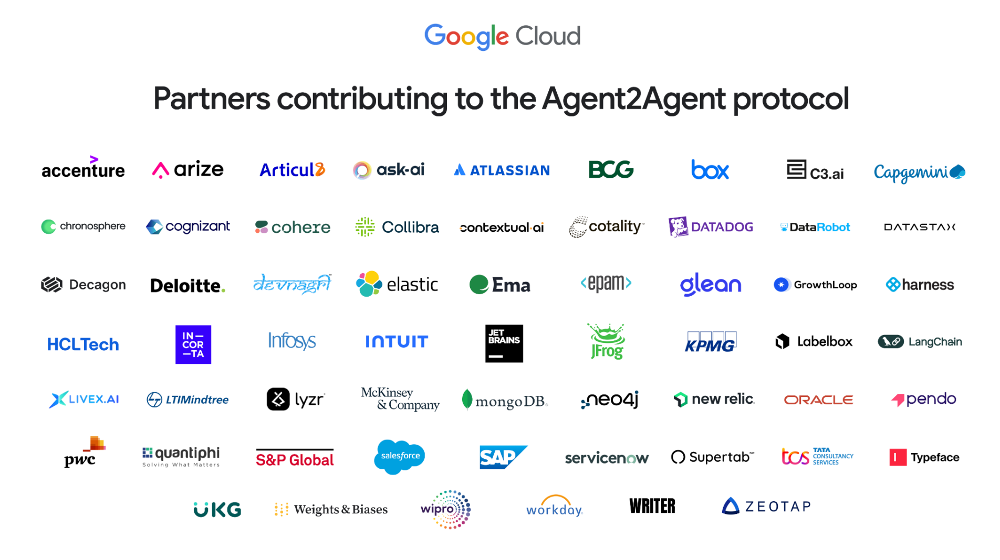
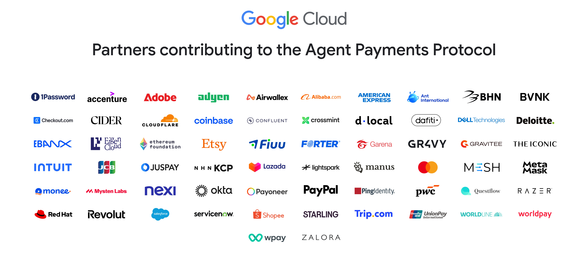

Introduction
PaygentForce is a Slack-powered Payments framework for Agentforce, powered by Google A2A
(Agent2Agent) and AP2 (Agent Payments Protocol) - created by Saurabh Kumar & Ankur Sharma for the
Dreamforce 2025 hackathon. It’s a solution built natively on Salesforce stack - leverages Slack,
Agentforce, Salesforce Core & Heroku.
The true power of Agentforce can be leveraged in a multi-agent scenario - Google launched A2A (Agent to Agent protocol) earlier this year and they launched AP2 (Agent Payment Protocol) on 17th September. We studied AP2 and A2A deeply in the last few days to come up with PaygentForce so it can serve as the goto framework for Agentforce powered payments which can be triggered by Slack. A simple scenario - an invoice is due for collection and you want Agentforce to collect it - it could be from a payment agent such as Stripe, Chargent, Adyen - let PaygentForce handle that for you.
We strongly believe that this is the first ever Agentforce integration with AP2 anywhere globally and it could be the baseline framework for building any sort of payment solutions on Agentforce. AP2 uses the concept of mandates —tamper-proof, cryptographically-signed digital contracts that serve as verifiable proof of a user's instructions and we've demonstrated how our solution Paygentforce supports mandates. The possibilities of Paygentforce are truly exciting * Commerce - Automated agents monitors prices and availability and automatically executes a secure purchase the moment that specific variant is found * Financial Services - Automated agents doing payments via mandates eliminating human intervention & MANY MORE!
The true power of Agentforce can be leveraged in a multi-agent scenario - Google launched A2A (Agent to Agent protocol) earlier this year and they launched AP2 (Agent Payment Protocol) on 17th September. We studied AP2 and A2A deeply in the last few days to come up with PaygentForce so it can serve as the goto framework for Agentforce powered payments which can be triggered by Slack. A simple scenario - an invoice is due for collection and you want Agentforce to collect it - it could be from a payment agent such as Stripe, Chargent, Adyen - let PaygentForce handle that for you.
We strongly believe that this is the first ever Agentforce integration with AP2 anywhere globally and it could be the baseline framework for building any sort of payment solutions on Agentforce. AP2 uses the concept of mandates —tamper-proof, cryptographically-signed digital contracts that serve as verifiable proof of a user's instructions and we've demonstrated how our solution Paygentforce supports mandates. The possibilities of Paygentforce are truly exciting * Commerce - Automated agents monitors prices and availability and automatically executes a secure purchase the moment that specific variant is found * Financial Services - Automated agents doing payments via mandates eliminating human intervention & MANY MORE!


How PaygentForce Works
System Architecture
PaygentForce is 100% native to Salesforce - built on Slack, Agentforce, Salesforce core and Heroku. It achieves standardisation and flexibility by following the latest AI Agent standards defined by Google and adopted by Salesforce
- Slack - Trigger payments for any transaction.
- AgentForce - Used as Salesforce AI engine for automated payments.
- A2A - Used for Agentforce to Payment Agent communication.
- AP2 - Used for triggering payments in an A2A scenario.
- Heroku - Middleware for data and actions.
- Webhook integrations - Real Time Data transfer between multiple system.

Why We Built PaygentForce for DF’25 Hackathon?
The AI Agent space is evolving rapidly and there is a need to define a robust framework on how
Agentforce should do payments when interacting with other agents. Since it’s triggered via Slack - which
is accessible to all & the architecture is based on open standards which are well adopted - A2A & AP2,
we believe there is huge potential to expand Paygentforce to serve as the baseline semantic layer for
Salesforce Payments on Agentforce.
The Road Ahead!
For now, we’ll anxiously await the fate of PaygentForce in the Dreamforce hackathon (please wish us
luck!) - but in the longer run, we’re hoping to expand this project to build accelerators
- Show PaygentForce working with sample payment agents as Stripe, Chargent and others
- Enhanced Guardrails in Agentforce for payment approvals
- Expand PaygentForce to be a multi-modal framework which can be accessed through not just Slack but also native Salesforce Mobile app & via Mobile SDK